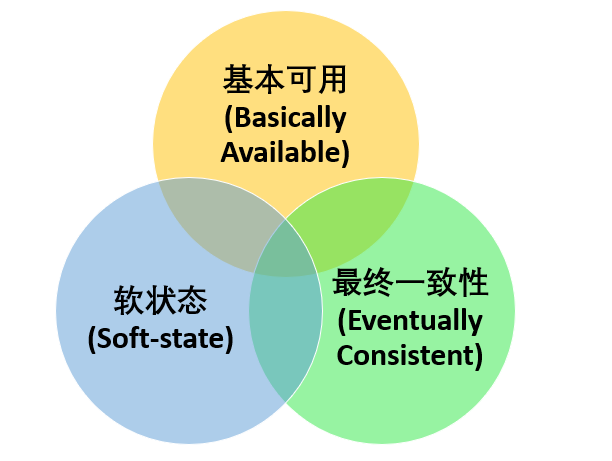

专业术语
QPS：
QPS Queries Per Second 是每秒查询率 ,是一台服务器 每秒能够相应的查询次数，是对一个特定的查询服务器在规定时间内 所处理流量多少的衡量标准, 即每秒的响应请求数，也即是最大吞吐能力。
TPS：
TPS Transactions Per Second 也就是事务数/秒。一个事务是指一个客户机向服务器发送请求然后服务器做出反应的过程。客户机在发送请求时开始计时，收到服务器响应后结束计时，以此来计算使用的时间和完成的事务个数。
QPS 和 TPS 区别
个人理解如下：
1、Tps 即每秒处理事务数，包括了
- 用户请求服务器
- 服务器自己的内部处理
- 服务器返回给用户
这三个过程，每秒能够完成 N 个这三个过程，Tps 也就是 N；
2、Qps 基本类似于 Tps，但是不同的是，对于一个页面的一次访问，形成一个 Tps；但一次页面请求，可能产生多次对服务器的请求，服务器对这些请求，就可计入“Qps”之中。比如请求京东页面，加载静态资源图片都计入QPS
并发数
并发数（并发度）：指系统同时能处理的请求数量，同样反应了系统的负载能力。这个数值可以分析机器 1s 内的访问日志数量来得到
吞吐量
吞吐量是指系统在单位时间内处理请求的数量，TPS、QPS 都是吞吐量的常用量化指标。
重要参数
QPS(TPS),并发数，响应时间
- QPS(TPS)：每秒钟 request/事务 数量
- 并发数：系统同时处理的 request/事务数
- 响应时间：一般取平均响应时间
关系
QPS(TPS)=并发数/平均响应时间
PV （Page View）
页面访问量，即页面浏览量或点击量，用户每次刷新即被计算一次。可以统计服务一天的访问日志得到。
UV （Unique Visitor）
独立访客，统计 1 天内访问某站点的用户数。可以统计服务一天的访问日志并根据用户的唯一标识去重得到。响应时间（RT）：响应时间是指系统对请求作出响应的时间，一般取平均响应时间。可以通过 Nginx、Apache 之类的 Web Server 得到。
DAU (Daily Active User)
日活跃用户数量。常用于反映网站、互联网应用或网络游戏的运营情况。DAU 通常统计一日（统计日）之内，登录或使用了某个产品的用户数（去除重复登录的用户），与 UV 概念相似
MAU (Month Active User)
月活跃用户数量，指网站、app 等去重后的月活跃用户数量
一：架构模型
（1）结构模型：这是一个最直观、最普遍的建模方法。这种方法以架构的构件、连接件（connector）和其他概念来刻画结构，并力图通过结构来反映系统的重要语义内容，包括系统的配置、约束、隐含的假设条件、风格、性质等。研究结构模型的核心是架构描述语言。
（2）框架模型：框架模型与结构模型类似，但它不太侧重描述结构的细节而更侧重于整体的结构。框架模型主要以一些特殊的问题为目标建立只针对和适应该问题的结构。
（3）动态模型：动态模型是对结构或框架模型的补充，研究系统的“大颗粒”的行为性质。例如，描述系统的重新配置或演化。动态可以指系统总体结构的配置、建立或拆除通信通道或计算的过程。这类系统常是激励型的。
（4）过程模型：过程模型研究构造系统的步骤和过程。因而结构是遵循某些过程脚本的结果。
（5）功能模型：该模型认为架构是由一组功能构件按层次组成，下层向上层提供服务。它可以看作是一种特殊的框架模型。
5种，但各有所长，将它们有机统一起来也许更合适，所以有人提出了“4+1”视图模型：

逻辑视图：逻辑视图关注功能，不仅包括用户可见的功能，还包括为实现用户功能而必须提供的"辅助功能模块"；它们可能是逻辑层、功能模块等。
开发视图：开发视图关注程序包，不仅包括要编写的源程序，还包括可以直接使用的第三方SDK和现成框架、类库，以及开发的系统将运行于其上的系统软件或中间件。开发视图和逻辑视图之间可能存在一定的映射关系：比如逻辑层一般会映射到多个程序包等。
处理视图：处理视图关注进程、线程、对象等运行时概念，以及相关的并发、同步、通信等问题。处理视图和开发视图的关系：开发视图一般偏重程序包在编译时期的静态依赖关系，而这些程序运行起来之后会表现为对象、线程、进程，处理视图比较关注的正是这些运行时单元的交互问题。 物理视图：物理视图关注"目标程序及其依赖的运行库和系统软件"最终如何安装或部署到物理机器，以及如何部署机器和网络来配合软件系统的可靠性、可伸缩性等要求。物理视图和处理视图的关系：处理视图特别关注目标程序的动态执行情况，而物理视图重视目标程序的静态位置问题；物理视图是综合考虑软件系统和整个IT系统相互影响的架构视图。
场景（scenarios）：可以看作是那些重要系统活动的抽象，它使四个视图有机联系起来，从某种意义上说场景是最重要的需求抽象。在开发架构时，它可以帮助设计者找到架构的构件和它们之间的作用关系。同时，也可以用场景来分析一个特定的视图，或描述不同视图构件间是如何相互作用的。场景可以用文本表示，也可以用图形表示。
二：架构需求与软件质量属性
三：软件架构风格
架构设计的一个核心问题是能能否达到架构级的软件复用
架构风格反映了领域中众多系统所共有的结构和语义特性，并指导如何将各个构件有效地组织成一个完成的系统
软件架构风格是描述某一特定应用领域中系统组织方式的惯用模式（idiomatic paradigm）。
SOA架构
服务是一种为了满足某项业务需求的操作，规则等的逻辑组合，它包含一系列有序活动的交互，为实现用户目标提供支持。


基于服务的架构（SOA）到实现方式：

特定领域软件架构
分布式
概述
解决单个物理服务器容量和性能瓶颈问题而采用的优化手段，将一个业务拆分成不同的子业务，分布在不同的机器上执行。服务之间通过远程调用协同工作，对外提供服务。
该领域需要解决的问题极多，在不同的技术层面上，又包括：分布式缓存、分布式数据库、分布式计算、分布式文件系统等，一些技术如 MQ、Redis、zookeeper 等都跟分布式有关。
分布式两种形式：
水平扩展：当一台机器扛不住流量时，就通过添加机器的方式，将流量平分到所有服务器上，所有机器都可以提供 相同的服务；
垂直拆分：前端有多种查询需求时，一台机器扛不住，可以将不同的业务需求分发到不同的机器上，比如 A 机器处理余票查询的请求，B 机器处理支付的请求。
集群
在多台不同的服务器中部署相同应用或服务模块，构成一个集群，通过负载均衡设备对外提供服务。
特点
可扩展性：集群中的服务节点，可以动态的添加机器，从而增加集群的处理能力。
高可用性：如果集群某个节点发生故障，这台节点上面运行的服务，可以被其他服务节点接管，从而增强集群的高可用性。
两大能力
负载均衡：负载均衡能把任务比较均衡地分布到集群环境下的计算和网络资源。
集群容错：当我们的系统中用到集群环境，因为各种原因在集群调用失败时，集群容错起到关键性的作用。
微服务
很小的服务，小到一个服务只对应一个单一的功能，只做一件事。这个服务可以单独部署运行，服务之间通过远程调用协同工作，每个微服务都是由独立的小团队开发，测试，部署，上线，负责它的整个生命周期。
分布式设计理念
目标：
目标是提升系统的整体性能和吞吐量另外还要尽量保证分布式系统的容错性（假如增加 10 台服务器才达到单机运行效果 2 倍左右的性能，那么这个分布式系统就根本没有存在的意义）。
即使采用了分布式系统，我们也要尽力运用并发编程、高性能网络框架等等手段提升单机上的程序性能。
两大思路：
中心化设计
“领导”通常负责分发任务并监督“干活的”，发现谁太闲了，就想发设法地给其安排新任务，确保没有一个“干活的”能够偷懒，如果“领导”发现某个“干活的”因为劳累过度而病倒了，则是不会考虑先尝试“医治”他的，而是一脚踢出去，然后把他的任务分给其他人。其中微服务架构 Kubernetes 就恰好采用了这一设计思路。
问题：
效率什么全部在于领导
解决办法：
大多数中心化系统都采用了主备两个“领导”的设计方案，可以是热备或者冷备，也可以是自动切换或者手动切换，而且越来越多的新系统都开始具备自动选举切换“领导”的能力，以提升系统的可用性。
去中心化设计
“去中心化”不是不要中心，而是由节点来自由选择中心。集群的成员会自发的举行“会议”选举新的“领导”主持工作。
问题：
脑裂问题：指一个集群由于网络的故障，被分为至少两个彼此无法通信的单独集群，此时如果两个集群都各自工作，则可能会产生严重的数据冲突和错误。一般的设计思路是，当集群判断发生了脑裂问题时，规模较小的集群就“自杀”或者拒绝服务。
CAP 定理

在理论计算机科学中，CAP 定理（CAP theorem），又被称作布鲁尔定理（Brewer’s theorem），它指出对于一个分布式计算系统来说，不可能同时满足以下三点：
| 选项 | 描述 |
|---|---|
| Consistency（一致性） | 指数据在多个副本之间能够保持一致的特性（严格的一致性） |
| Availability（可用性） | 指系统提供的服务必须一直处于可用的状态，每次请求都能获取到非错的响应（不保证获取的数据为最新数据） |
| Partition tolerance（分区容错性） | 分布式系统在遇到任何网络分区故障的时候，仍然能够对外提供满足一致性和可用性的服务，除非整个网络环境都发生了故障 |
Spring Cloud 在 CAP 法则上主要满足的是 A 和 P 法则，Dubbo 和 Zookeeper 在 CAP 法则主要满足的是 C 和 P 法则
CAP 仅适用于原子读写的 NOSQL 场景中，并不适合数据库系统。现在的分布式系统具有更多特性比如扩展性、可用性等等，在进行系统设计和开发时，我们不应该仅仅局限在 CAP 问题上。
为什么不能同时选择三个？
在分布式环境下，为了保证系统高可用分区容错性，通常都采取了复制的方式，避免一个节点损坏，导致系统不可用。那么就出现了每个节点上的数据出现了很多个副本的情况，而数据从一个节点复制到另外的节点时需要时间和要求网络畅通的，所以，当无法向某个节点复制数据时，这时候你有两个选择： 选择可用性 A(Availability)，此时，那个失去联系的节点依然可以向系统提供服务，不过它的数据就不能保证是同步的了（失去了 C 属性）。 选择一致性 C(Consistency)，为了保证数据库的一致性，我们必须等待失去联系的节点恢复过来，在这个过程中，那个节点是不允许对外提供服务的，这时候系统处于不可用状态(失去了 A 属性)。
组合：
AP：放弃严格的一致性，BASE理论就是基于AP原则发展而来的，只要用户可以保证最终的一致性即可。
CP：放弃可用性，追求一致性和分区容错性，我们的zookeeper其实就是追求的强一致，又比如跨行转账，一次转账请 求要等待双方银行系统都完成整个事务才算完成。
CA：放弃分区容忍性，即不进行分区，不考虑由于网络不通或结点挂掉的问题，则可以实现一致性和可用性。那么系统 将不是一个标准的分布式系统
证明：
有用户向 N1 发送了请求更改了数据，将数据库从 V0 更新成了 V1。由于网络断开，所以 N2 数据库依然是 V0，如果这个时候有一个请求发给了 N2，但是 N2 并没有办法可以直接给出最新的结果 V1，这个时候该怎么办呢？
这个时候无法两种方法，一种是将错就错，将错误的 V0 数据返回给用户。第二种是阻塞等待，等待网络通信恢复，N2 中的数据更新之后再返回给用户。显然前者牺牲了一致性，后者牺牲了可用性。
BASE 理论
由 eBay 架构师 Dan Pritchett 提出，并且 eBay 给出了他们在实践中总结的基于 BASE 理论的一套新的分布式事务解决方案。
BASE 是 Basically Available（基本可用） 、Soft-state（软状态） 和 Eventually Consistent（最终一致性） 三个短语的缩写。BASE 理论是对 CAP 中一致性和可用性权衡的结果，其来源于对大规模互联网系统分布式实践的总结，是基于 CAP 定理逐步演化而来的，它大大降低了我们对系统的要求。满足BASE理论的事务，我们称之为“柔性事务”。
核心思想：
即使无法做到强一致性，但每个应用都可以根据自身业务特点，采用适当的方式来使系统达到最终一致性。也就是牺牲数据的一致性来满足系统的高可用性，系统中一部分数据不可用或者不一致时，仍需要保持系统整体“主要可用”。
针对数据库领域，BASE 思想的主要实现是对业务数据进行拆分，让不同的数据分布在不同的机器上，以提升系统的可用性，当前主要有以下两种做法：
- 按功能划分数据库
- 分片（如开源的 Mycat、Amoeba 等）。
由于拆分后会涉及分布式事务问题，所以 eBay 在该 BASE 论文中提到了如何用最终一致性的思路来实现高性能的分布式事务。
三要素

- 基本可用
基本可用是指分布式系统在出现不可预知故障的时候，允许损失部分可用性。但是，这绝不等价于系统不可用。
比如：
- 响应时间上的损失：正常情况下，一个在线搜索引擎需要在 0.5 秒之内返回给用户相应的查询结果，但由于出现故障，查询结果的响应时间增加了 1~2 秒
系统功能上的损失：正常情况下，在一个电子商务网站上进行购物的时候，消费者几乎能够顺利完成每一笔订单，但是在一些节日大促购物高峰的时候，由于消费者的购物行为激增，为了保护购物系统的稳定性，部分消费者可能会被引导到一个降级页面
软状态
软状态指允许系统中的数据存在中间状态，并认为该中间状态的存在不会影响系统的整体可用性，即允许系统在不同节点的数据副本之间进行数据同步的过程存在延时。如订单的"支付中"、“数据同步中”等状态，待数据最终一致后状态改为“成功”状态
- 最终一致性
最终一致性强调的是系统中所有的数据副本，在经过一段时间的同步后，最终能够达到一个一致的状态。因此，最终一致性的本质是需要系统保证最终数据能够达到一致，而不需要实时保证系统数据的强一致性。
高并发：时间极短、 瞬间用户量大。
前段数字校检：防止机器干扰
nginx：校验恶意请求，转发请求，负载均衡；动静分离，不走 tomcat 获取静态资源；gzip 压缩，减少静态文件传输的体积，节省带宽，提高渲染速度
业务层：集群，多台机器处理，提高并发能力
Redis：集群保证高可用，持久化数据；分布式锁（悲观锁）；缓存热点数据（库存）
mq：削峰限流，MQ 堆积订单，保护订单处理层的负载，Consumer 根据自己的消费能力来取 Task，实际上下游的压力就可控了。重点做好路由层和 MQ 的安全
数据库：读写分离，拆分事务提高并发度
负载均衡
根据各个机器的能力进行分配，权重。
系统设计指标
一、性能
性能指标
1. 响应时间
指某个请求从发出到接收到响应消耗的时间。
在对响应时间进行测试时，通常采用重复请求的方式，然后计算平均响应时间。
2. 吞吐量
指系统在单位时间内可以处理的请求数量，通常使用每秒的请求数来衡量。
3. 并发用户数
指系统能同时处理的并发用户请求数量。
在没有并发存在的系统中，请求被顺序执行，此时响应时间为吞吐量的倒数。例如系统支持的吞吐量为 100 req/s，那么平均响应时间应该为 0.01s。
目前的大型系统都支持多线程来处理并发请求，多线程能够提高吞吐量以及缩短响应时间，主要有两个原因：
- 多 CPU
- IO 等待时间
使用 IO 多路复用等方式，系统在等待一个 IO 操作完成的这段时间内不需要被阻塞，可以去处理其它请求。通过将这个等待时间利用起来，使得 CPU 利用率大大提高。
并发用户数不是越高越好，因为如果并发用户数太高，系统来不及处理这么多的请求，会使得过多的请求需要等待，那么响应时间就会大大提高。
性能优化
1. 集群
将多台服务器组成集群，使用负载均衡将请求转发到集群中，避免单一服务器的负载压力过大导致性能降低。
2. 缓存
缓存能够提高性能的原因如下：
- 缓存数据通常位于内存等介质中，这种介质对于读操作特别快；
- 缓存数据可以位于靠近用户的地理位置上；
- 可以将计算结果进行缓存，从而避免重复计算。
3. 异步
某些流程可以将操作转换为消息，将消息发送到消息队列之后立即返回，之后这个操作会被异步处理。
二、伸缩性
指不断向集群中添加服务器来缓解不断上升的用户并发访问压力和不断增长的数据存储需求。
伸缩性与性能
如果系统存在性能问题，那么单个用户的请求总是很慢的；
如果系统存在伸缩性问题，那么单个用户的请求可能会很快，但是在并发数很高的情况下系统会很慢。
实现伸缩性
应用服务器只要不具有状态，那么就可以很容易地通过负载均衡器向集群中添加新的服务器。
关系型数据库的伸缩性通过 Sharding 来实现，将数据按一定的规则分布到不同的节点上，从而解决单台存储服务器的存储空间限制。
对于非关系型数据库，它们天生就是为海量数据而诞生，对伸缩性的支持特别好。
三、扩展性
指的是添加新功能时对现有系统的其它应用无影响，这就要求不同应用具备低耦合的特点。
实现可扩展主要有两种方式：
- 使用消息队列进行解耦，应用之间通过消息传递进行通信；
- 使用分布式服务将业务和可复用的服务分离开来，业务使用分布式服务框架调用可复用的服务。新增的产品可以通过调用可复用的服务来实现业务逻辑，对其它产品没有影响。
四、可用性
高可用相当于保险，成本高，但是公司不仅花钱买到了一堆资产，还买到了安全感，更买到了用户对公司无价的信任，只要规划在合理范围内，这笔买卖的性价比就非常高。
设计要素
冗余
保证高可用的主要手段是使用冗余，当某个服务器故障时就请求其它服务器。
应用服务器的冗余比较容易实现，只要保证应用服务器不具有状态，那么某个应用服务器故障时，负载均衡器将该应用服务器原先的用户请求转发到另一个应用服务器上，不会对用户有任何影响。
存储服务器的冗余需要使用主从复制来实现，当主服务器故障时，需要提升从服务器为主服务器，这个过程称为切换。
监控
对 CPU、内存、磁盘、网络等系统负载信息进行监控，当某个信息达到一定阈值时通知运维人员，从而在系统发生故障之前及时发现问题。
故障转移
一种手动或者自动机制，如果监控显示活动组件发生故障，该机制可以从当前活动的组件切换到冗余组件
服务降级
服务降级是系统为了应对大量的请求，主动关闭部分功能，从而保证核心功能可用。
常见的可用性评价指标：
MTBF：平均故障间隔时间
MTTR：平均恢复前时间
MTTF：修复前平均时间
SA：同时可用此公式计算：SA = MTBF/(MTBF + MTTR)
RPO：恢复点目标
RTO：恢复时间目标
容错，高可用，灾难恢复的区别？
答：
容错指系统运行过程中，即使某部分单元故障，也可以继续运行。
高可用指系统在故障发生时可以用极少的时间恢复业务运行，需要的中断时间越短高可用性等级越高，其关键在“快速”的恢复能力。
灾难恢复指当灾难发生时，可以切换业务、数据到其它地域进行恢复，关键在通过“切换”实现恢复，这里注意灾难恢复不是为了挽救基础设施，而是为了挽救业务或数据。
检测：
全链路故障演练
五、安全性
要求系统在应对各种攻击手段时能够有可靠的应对措施。
高内聚低耦合
主要是面向对象的设计，看类的内聚性是否高，耦合度是否低。
内聚关注模块内部的元素的结合程度，耦合关注模块之间的依赖程度
好处：体现在系统持续发展的过程中，高内聚，低耦合的系统具有更好的重用性，维护性，扩展性，可以高效的完成系统的维护开发，持续的支持业务的发展。
高内聚，同一模块内的东西尽可能的可重用，函数化。低耦合，多个模块间尽可能少依赖。
内聚
模块的功能强度的度量，若一个模块内的各元素联系越紧密，则它的内聚性越高。内聚有如下的种类，它们之间的内聚度由弱到强排列如下：
一：偶然内聚：个模块内的各处理元素之间没有任何联系，只是偶然地被凑到一起。这种模块也称为巧合内聚，内聚程度最低。
二：逻辑内聚：这种模块把几种相关的功能组合在一起， 每次被调用时，由传送给模块参数来确定该模块应完成哪一种功能 。
三：时间内聚：把需要同时执行的动作组合在一起形成的模块称为时间内聚模块
四：过程内聚：构件或者操作的组合方式，允许在调用前面的构件或操作之后，马上调用后面的构件或操作。
五：通信内聚：指模块内各个组成部分都使用相同的数据结构或产生相同的数据结构。
六：顺序内聚：一个模块中各个处理元素和同一功能密切相关。
七：功能内聚
耦合
一、 内容耦合：一个模块直接访问另一模块的内容，则称这两个模块为内容耦合。
二、公共耦合：一组模块都访问同一个全局数据结构，则称之为公共耦合。
三、外部耦合：一组模块都访问同一全局简单变量，而且不通过参数表传递该全局变量的信息，则称之为外部耦合。
四、控制耦合：模块之间传递的不是数据信息，而是控制信息例如标志、开关量等，一个模块控制了另一个模块的功能。
五、标记耦合：调用模块和被调用模块之间传递数据结构而不是简单数据，同时也称作特征耦合。表就和的模块间传递的不是简单变量，而是像高级语言中的数据名、记录名和文件名等数据结果，这些名字即为标记，其实传递的是地址。
六、数据耦合：调用模块和被调用模块之间只传递简单的数据项参数。相当于高级语言中的值传递。
七、非直接耦合：两个模块之间没有直接关系，它们之间的联系完全是通过主模块的控制和调用来实现的。耦合度最弱，模块独立性最强